MAURIZIO
CATTELAN
전시개요
리움미술관은 2023년 첫 전시로 이 시대의 가장 논쟁적인 작가로 알려진
마우리치오 카텔란(Maurizio Cattelan)의 《WE》를 개최합니다. 2011년
뉴욕 구겐하임 회고전 이래 최대 규모인 이번 전시는 카텔란의 미술계 등단
시기인 90년대부터 지금까지 소개된 작품 38점으로 구성됩니다.
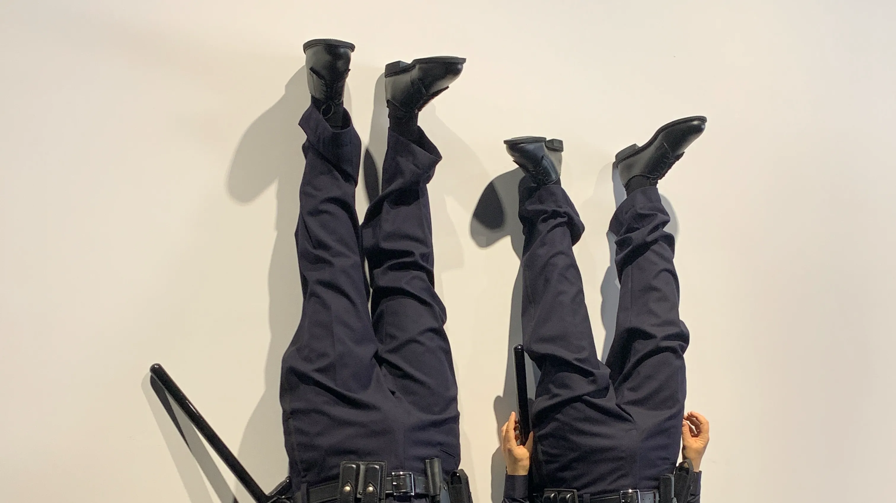
 카텔란의 작품들은 보기에 단순하고 바로 이해할 수 있는 극사실적 조각과
회화가 주를 이루며, 대부분 미술사를 슬쩍 도용하거나 익숙한 대중적
요소를 교묘히 이용합니다. 익살스럽고 냉소적인 일화로 포장된 그의
작품은 무례하고 뻔뻔한 태도로 불편한 진실을 직시하게 하고 우리 인식의
근간을 순식간에 뒤엎어버립니다. 카텔란은 도덕적 합리성이나 계몽적
이상을 설파하는 예술가 역할을 거부합니다. 그는 사기꾼, 협잡꾼,
악동이라 불리는 걸 두려워하지 않으며, 어릿광대를 자처하고 스스로를
희화하지만 그 누구보다도 인간의 본성을 정확히 꿰뚫어 보고 우리 삶의
폐부를 찌르는 예리한 현실 비평가이기도 합니다. 전시장 도처에서 우리를
응시하는 수많은 카텔란은 침입자, 경찰, 사제, 범죄자, 예술가, 소년을
능숙하게 연기하며 비관적이고 우울하며 냉소적인 카텔란판 인간희극으로
우리를 초대합니다. 그리고 이 도발적인 익살꾼은 채플린적 희극 장치를
적재적소에서 작동시키며 잔인한 삶에 대한 애잔한 공감을 끌어냅니다.
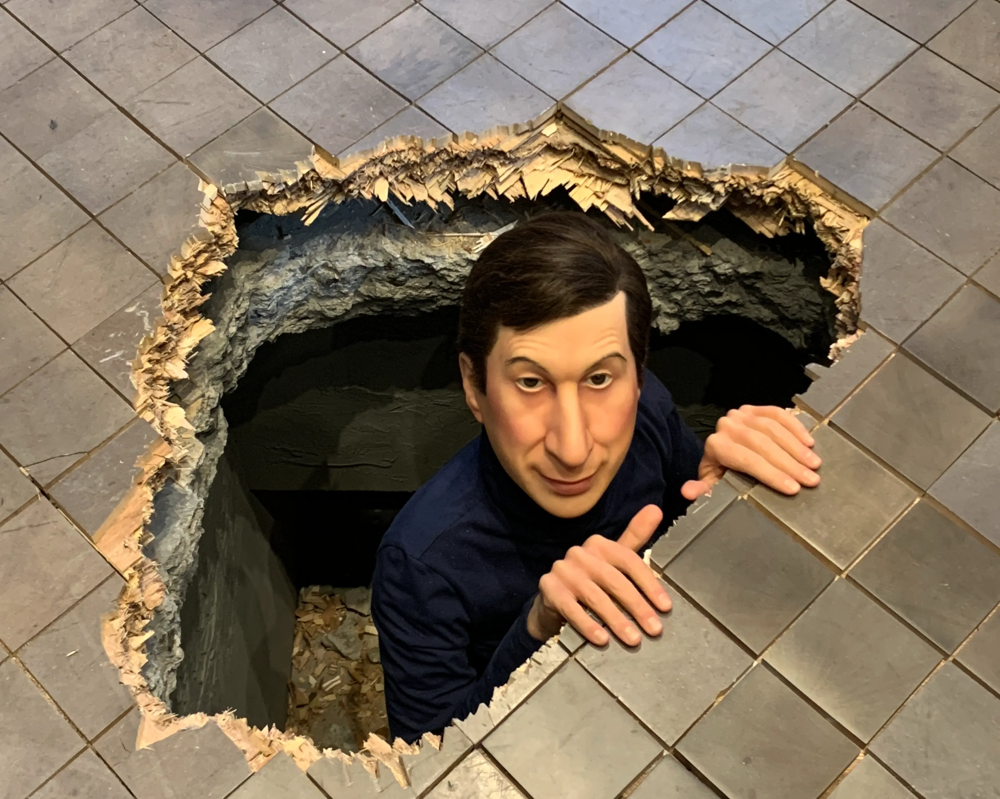
이번 전시 제목 《WE》는 카텔란의 작품 제목을 차용한 것이기는 하나 그
작품에 대한 직접적 참조보다는 확장된 의미에서 우리는 누구인가, 어떻게
우리가 되는가, 관계란 무엇인가라는 질문을 던집니다. 카텔란 작업에서
억압, 불안, 권위, 종교, 사랑, 나와 가족, 삶과 죽음 그리고 ‘우리’란
무엇인가에 관한 ‘생각’은 토론을 활성화하고 모종의 연대를 가능하게
합니다. 운석에 맞아 쓰러진 교황(〈아홉 번째 시간〉)은 특정 종교를 넘어
지역적 맥락에서 권위와 억압에 대한 토론을 주선하고, 시신을 연상케 하는
아홉 개의 카라라 대리석 조각(〈모두〉)은 최근 우리에게 일어난 참사를
소환하고 추모하며 우리의 현실과 공감합니다.
카텔란의 작품들은 보기에 단순하고 바로 이해할 수 있는 극사실적 조각과
회화가 주를 이루며, 대부분 미술사를 슬쩍 도용하거나 익숙한 대중적
요소를 교묘히 이용합니다. 익살스럽고 냉소적인 일화로 포장된 그의
작품은 무례하고 뻔뻔한 태도로 불편한 진실을 직시하게 하고 우리 인식의
근간을 순식간에 뒤엎어버립니다. 카텔란은 도덕적 합리성이나 계몽적
이상을 설파하는 예술가 역할을 거부합니다. 그는 사기꾼, 협잡꾼,
악동이라 불리는 걸 두려워하지 않으며, 어릿광대를 자처하고 스스로를
희화하지만 그 누구보다도 인간의 본성을 정확히 꿰뚫어 보고 우리 삶의
폐부를 찌르는 예리한 현실 비평가이기도 합니다. 전시장 도처에서 우리를
응시하는 수많은 카텔란은 침입자, 경찰, 사제, 범죄자, 예술가, 소년을
능숙하게 연기하며 비관적이고 우울하며 냉소적인 카텔란판 인간희극으로
우리를 초대합니다. 그리고 이 도발적인 익살꾼은 채플린적 희극 장치를
적재적소에서 작동시키며 잔인한 삶에 대한 애잔한 공감을 끌어냅니다.
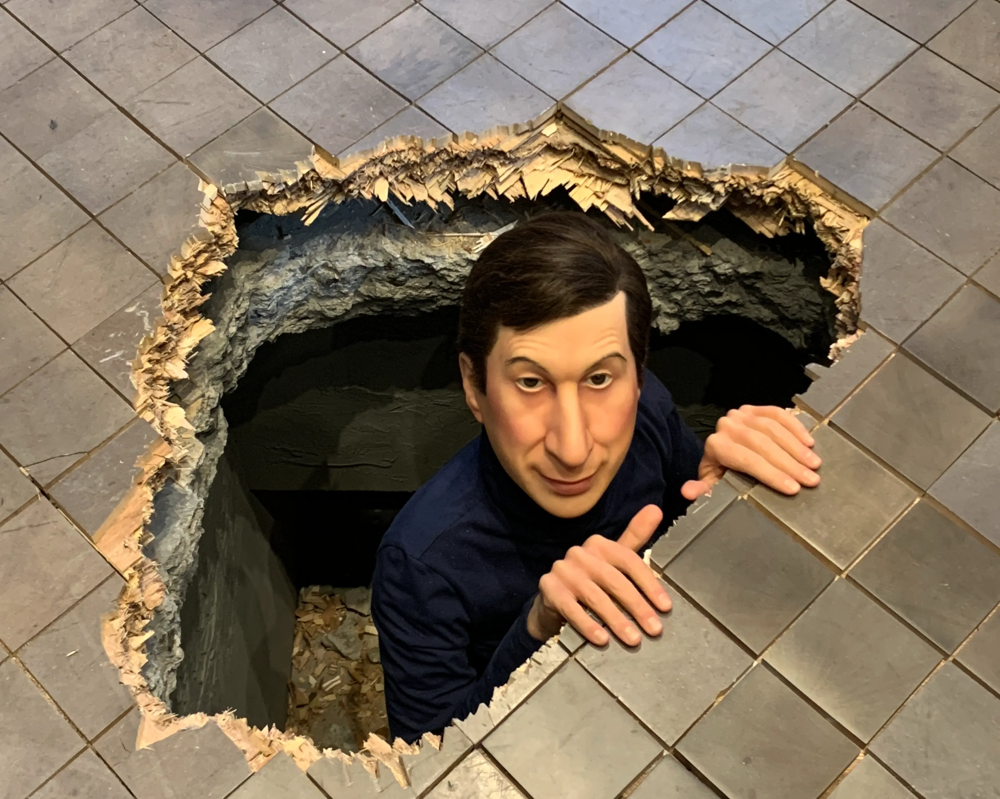
이번 전시 제목 《WE》는 카텔란의 작품 제목을 차용한 것이기는 하나 그
작품에 대한 직접적 참조보다는 확장된 의미에서 우리는 누구인가, 어떻게
우리가 되는가, 관계란 무엇인가라는 질문을 던집니다. 카텔란 작업에서
억압, 불안, 권위, 종교, 사랑, 나와 가족, 삶과 죽음 그리고 ‘우리’란
무엇인가에 관한 ‘생각’은 토론을 활성화하고 모종의 연대를 가능하게
합니다. 운석에 맞아 쓰러진 교황(〈아홉 번째 시간〉)은 특정 종교를 넘어
지역적 맥락에서 권위와 억압에 대한 토론을 주선하고, 시신을 연상케 하는
아홉 개의 카라라 대리석 조각(〈모두〉)은 최근 우리에게 일어난 참사를
소환하고 추모하며 우리의 현실과 공감합니다.
Cattelan, 59, is no stranger to controversy—or to a brand of mischievous humour both within his art practice and intrinsic to his enigmatic persona. His oeuvre teeters uneasily between reality and fiction, including a lifelike sculpture of a prone Pope John Paul II, felled by a meteorite; a horse with its head plunged through a wall; and, darkest of all, a kneeling schoolboy-size figure of Hitler apparently praying, titled Him. He once duct-taped an art dealer to a wall, suspending him a couple feet off the ground. Another time, at a loss for what to make, he locked the gallery door and hung a sign saying, “Be Right Back.” When the Guggenheim Museum offered him a retrospective in 2011, he insisted on dangling virtually all of his entire life’s work from the ceiling of the soaring rotunda, a feat of engineering worthy of Richard Serra, to be sure, but a conceptual approach so unorthodox it induced apoplectic rages in some critics. The New Yorker’s esteemed Peter Schjeldahl ripped not only the exhibition design but also the contents: “[H]e doesn’t make art. He makes tendentious tchotchkes.” For years early in his career, Cattelan dispatched his friend Massimiliano Gioni, now the respected artistic director of the New Museum, to stand in for him during interviews and lectures. Even in the 2016 documentary Maurizio Cattelan: Be Right Back, Gioni masqueraded as Cattelan, who was occasionally glimpsed but not heard. (The art-world cognoscenti no doubt chuckled smugly at the inside joke.)
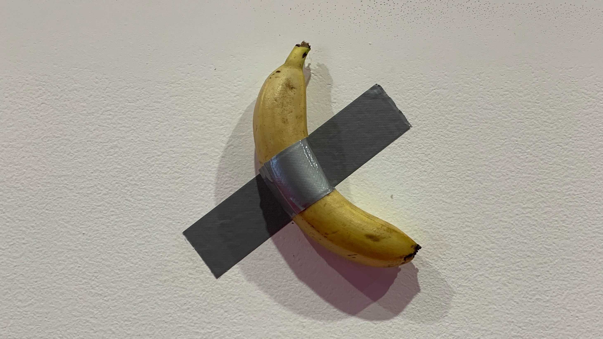
Comedian , Banana, duct tape dimensions
Untitled , 2001, Platinum silicone, epoxy fiberglass, stainless steel, human hair, clothing, Dimensions variable
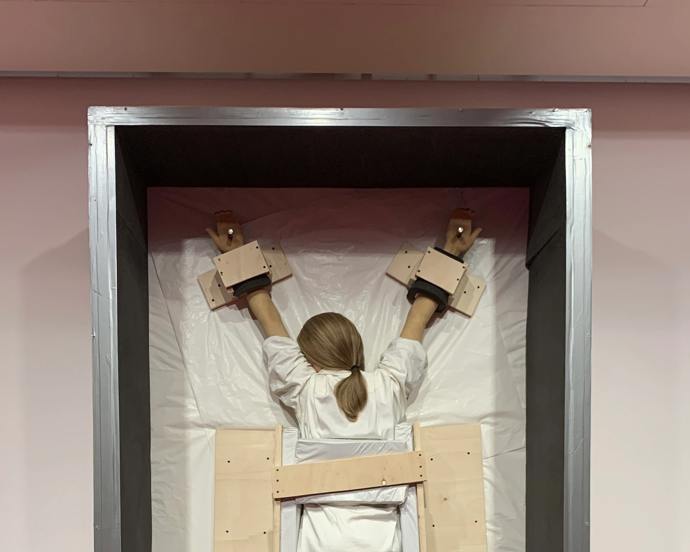 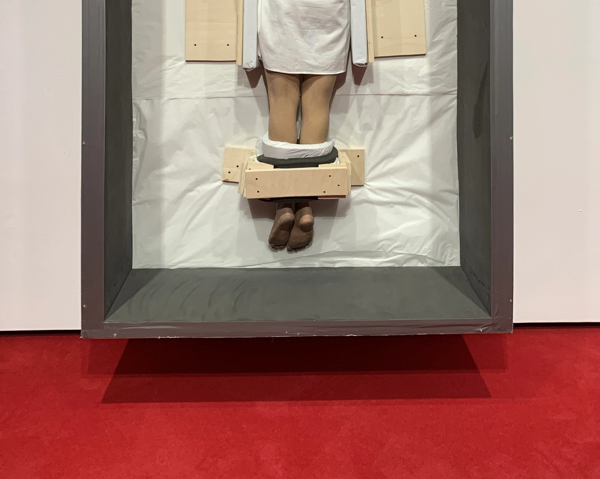
Untitled 2007, resin, paint, human hair, garment packing tissues, wood and screws 235.6 by 137.2 by 47 cm. 92 7/8 by 54 by 18 1/2 in.
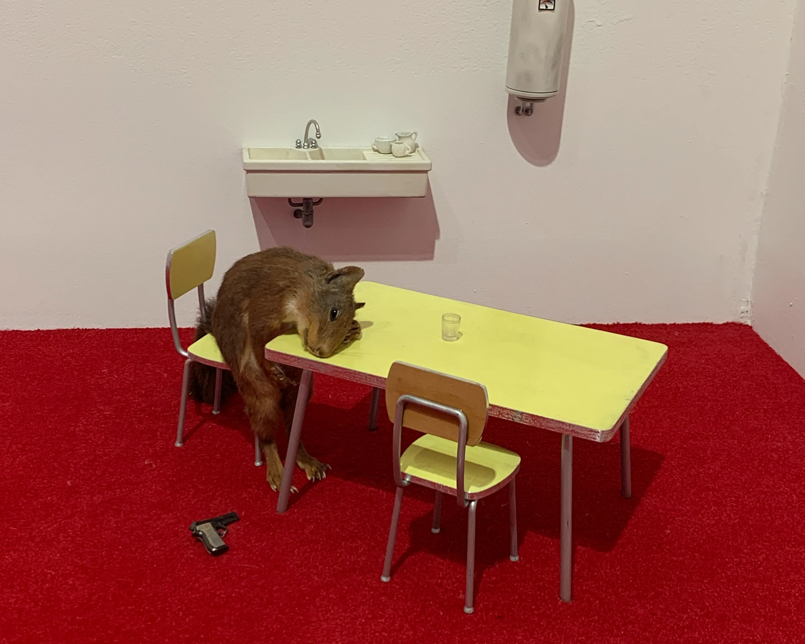
Bidibidobidiboo , 1996, Taxidermied squirrel, ceramic, Formica, wood, paint, steel, 45×60×58cm
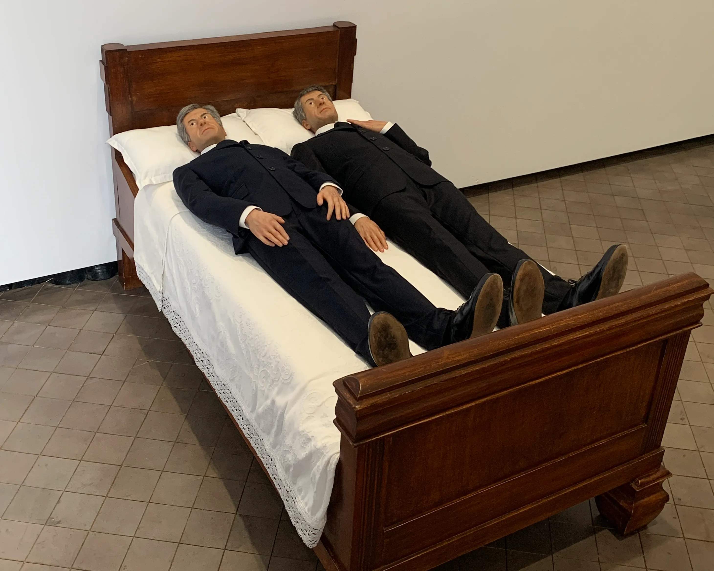
We , 2010, Wood, fiberglass, polyurethane rubber, fabric, clothing, shoes, 78.5×151×80cm
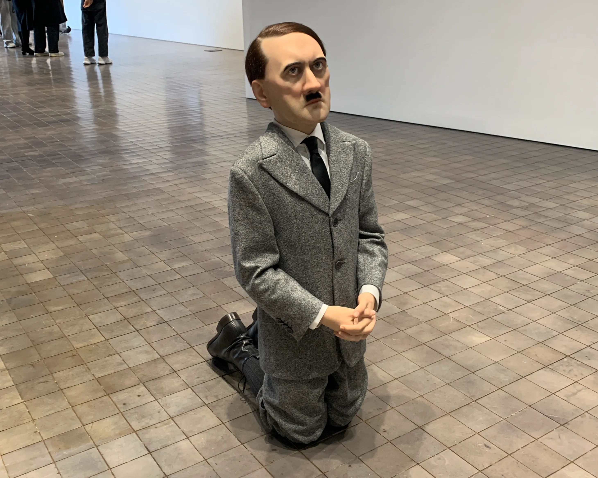
Him , 2001, Platinum silicone, fiberglass, human hair, clothing, shoes, 101×41×53cm
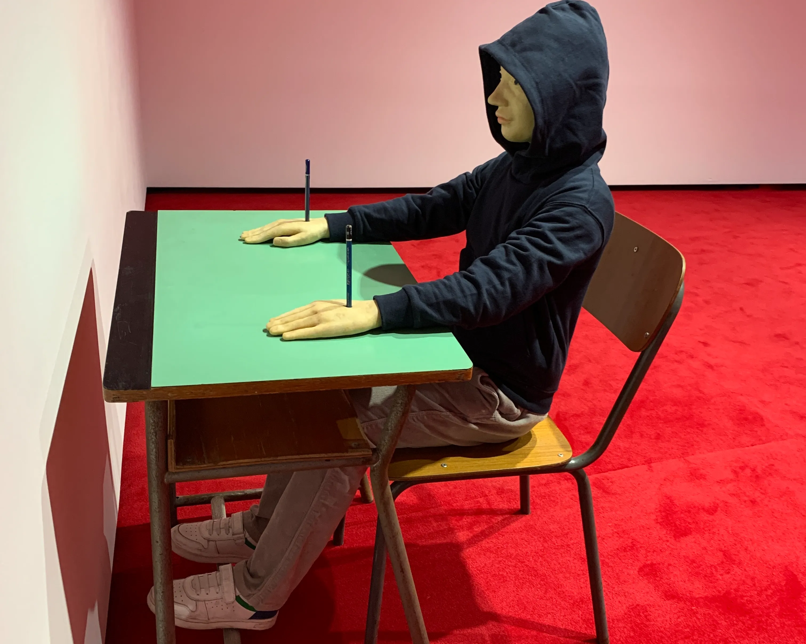
Charlie don't surf, 1997, 신발,78.5×151×80cm
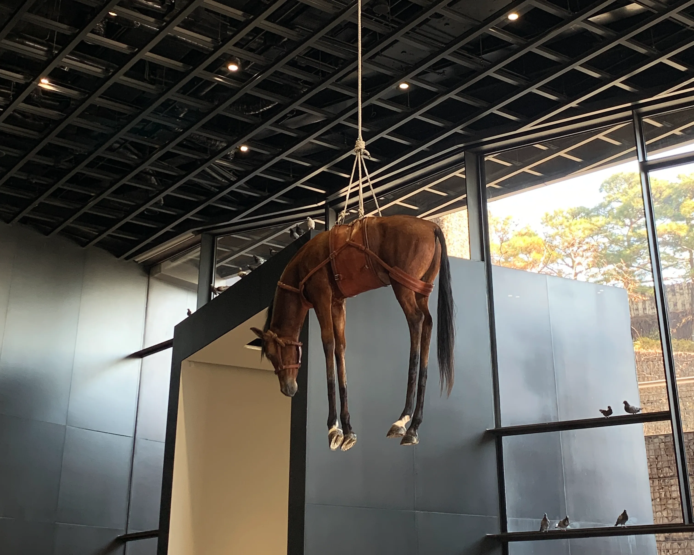
Novecento(1900), 1997, taxidermized horse, leather saddlery, rope
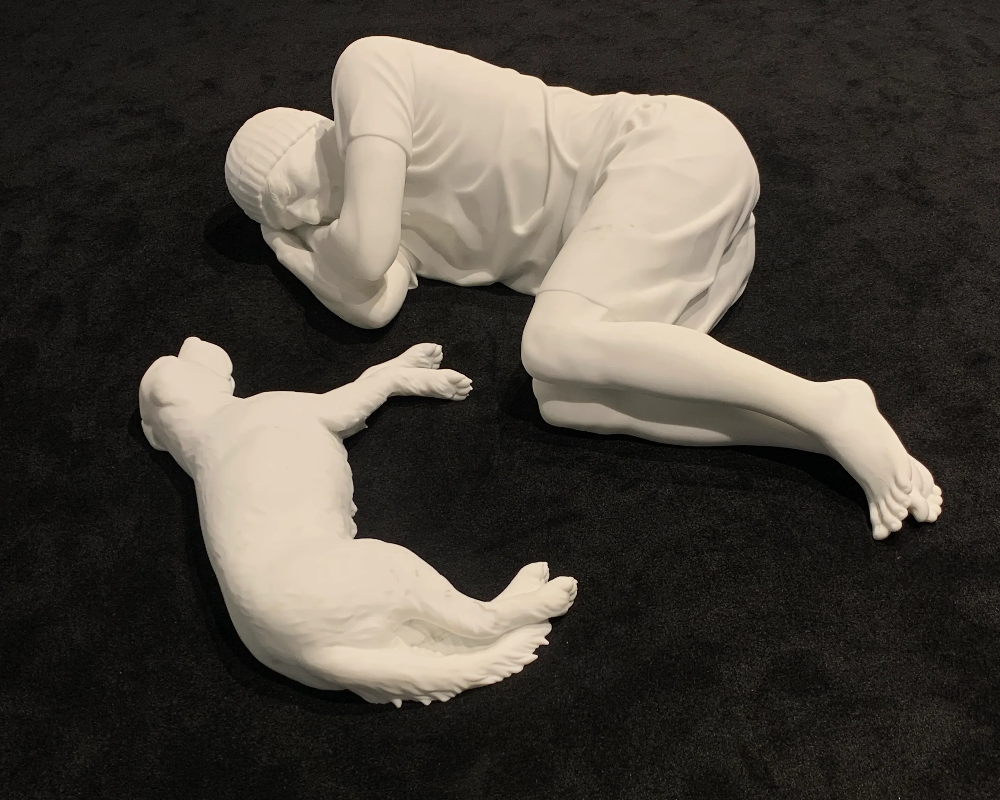
Breathe 2021, Carrara marble Human figure: 15 3/4 x 30 3/4 x 51 5/8 in. (40 x 78 x 131 cm) Dog: 11 3/4 x 25 5/8 x 15 3/4 in. (30 x 65 x 40 cm)
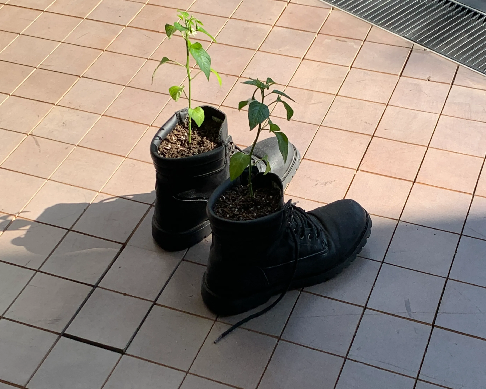
Untitled , 2008, chili, boots, soil